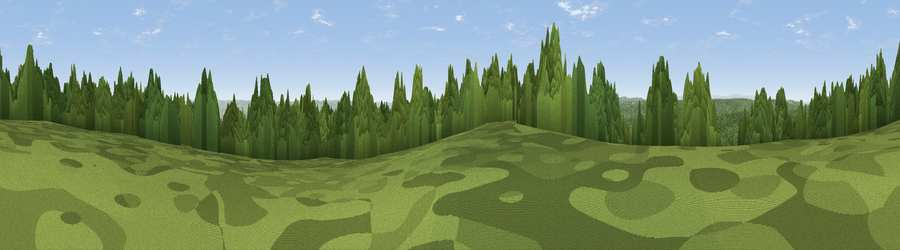

Viewpoint near Upper Soudley
#33066 in England · top 70% of its area beats it · near Upper SoudleyThe view, rendered

A 360° render of this exact spot computed from the terrain model, tree cover and land cover — summer colours, afternoon light, calibrated against photographs of famous viewpoints. Real trees, hedges and buildings will differ in detail.
The panorama
Grey silhouette: terrain skyline in each direction (720 bearings, Earth curvature and refraction included). Dashed green: skyline with trees (+15 m) and buildings (+8 m) as obstacles. Blue strip: how far the ground is visible on each bearing.
Where the view opens
Wedge length = distance to the farthest visible ground on that bearing (vegetation-aware). Rings at 10, 25 and 50 km.
What fills the view
76% woodland · 16% grassland · 4% cropland · 2% built-up · 2% water
Angular shares of the visible panorama (visual magnitude), not map area. Landscape diversity 0.34 (0–1 Shannon).
Key numbers
More beautiful places nearby
The staircase of upgrades: each row has a higher view potential than everything closer. Driving times are estimates from straight-line distance, calibrated against real road routing — check an actual route before setting out.
| Place | Direction | Drive | Score |
|---|---|---|---|
| Viewpoint near Ruspidge | N · 1 km | ~3 min | 47.9 |
| Blaize Bailey Viewpoint | NE · 3 km | ~7 min | 69.3 |
| Viewpoint near Yorkley | SSW · 4 km | ~8 min | 70.9 |
| Viewpoint near Littledean | NE · 4 km | ~10 min | 73.8 |
| Viewpoint near Ruardean | NNW · 7 km | ~15 min | 74.2 |
| Viewpoint near Huntley | NE · 10 km | ~20 min | 75.0 |
| Viewpoint near May Hill | NNE · 12 km | ~22 min | 76.1 |
| Chase Wood Hill | NNW · 13 km | ~24 min | 77.6 |
51.79000, -2.51501 · source: screening · position refined by local search. Computed location — check access rights before visiting.